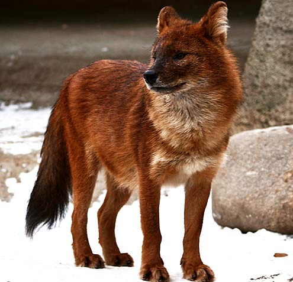
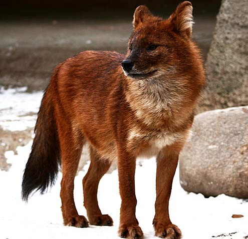
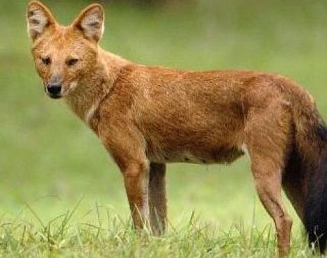
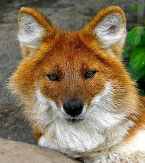
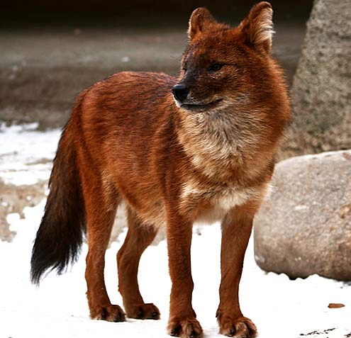

.jpg "The Dhole")
.jpg "The Dhole") 

The Dhole is definitely a real animal! Many people pronounce the name wrong, the name "Dhole" is pronounced "Dole". The Dhole is a type of wild dog. Dhole pups grow rapidly and are cared for by both their parents. Dholes, like other dogs, are social and live in a group called a pack. Just like dogs you may know, dholes happily wag their tails at one another in greeting! The pack works together to feed and care for itself. Each pack has 5 to 12 members, but its members also work or play with dholes from outside of their own pack.
The Dhole is a type of dog and are about the same size as a German Sheppard but looks more like a long-legged fox. Dholes are highly elusive and skilled jumpers are classified with wolves, coyotes, jackals, and foxes in the taxonomic family Canidae. Dhole are quite unusual dogs for many reasons. Most dogs have three molars on each side of their jaw and dholes only have two. They also have a relatively shorter jaw than most dog counterparts. Female dholes have more teats than other canid species and can produce up to 12 pups per litter. Dholes are very athletic. They are very fast runners, excellent swimmers, and impressive jumpers. These skills are critical when the pack is hunting. In some protected areas, they share habitat with tigers and leopards.



To date, there have been very few studies on dholes in the wild, and the true status of this species is unknown across the majority of its geographic range, especially in Southeast Asia. The dhole is secretive and lives in highly social, close-knit packs of three to 20 individuals with rigid dominance hierarchies (similar to African wild dogs). A dhole pack hunts cooperatively and maintains communication within dense forests by “whistling.” This has earned the species the name “whistling hunter.” The main threats to dholes include conversion of their habitats to livestock pasture or agricultural land, depletion of their food sources (mainly deer) by poachers, hunting and disease.
The dhole normally lives in forest habitats, but can also eke out an existence in the open steppes of Kashmir and Siberia. As the Latin name, Cuon alpinus suggests, the dhole is often found in hilly or mountainous regions. The dhole's historical range reflects this great adaptability, extending from India to Russia, and down through China to Malaysia and Indonesia (Java being the southern limit). In recent decades, however, there has been massive habitat loss within this region. Today, very little is known about the dhole's distribution, but restricted surveys indicate serious decline and fragmentation of the former range. The best remaining populations are probably to be found in central and southern India, but even their stability is in question. The urgent need for more information on the dhole's present distribution has been highlighted in the latest IUCN Action Plan for Canids. In response to this plan, DCP have designed a sighting form and questionnaire survey and are compiling information on the dhole's status and distribution. Armed with such knowledge we will be in a much better position to mobilise direct conservation action. To help conserve this species by working in the field with Earth watch click here.